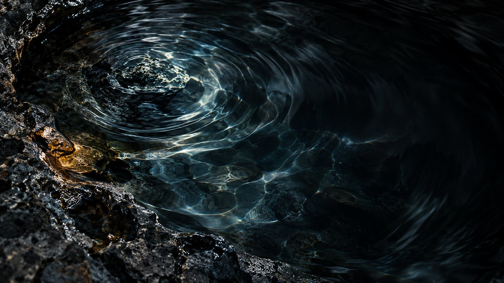
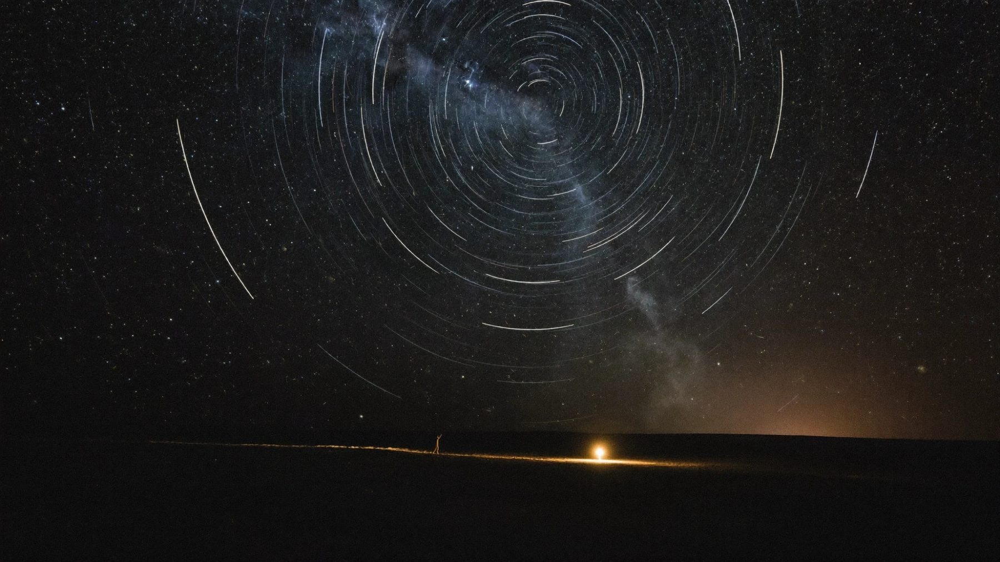

How we work
We begin with the things that rarely make it into a brief.
The image you keep returning to, the line you always change, the part of the story everybody else passes over. Those details can tell us as much as the formal brief. We want to understand the work in your terms before finding the direction we will take together.

- 01
Spend time in the world
We look at the project, its audience and its history. We ask about your references and the choices you have already made, including the ones you find difficult to explain. This gives us a feel for what belongs and what needs questioning.
- 02
Agree on the direction
We turn that understanding into a creative direction and a clear scope. We agree on what we will make, who will be involved and how decisions will be made, so everybody knows what they are working towards.
- 03
Make and reconsider
Ideas change when they become images, words and finished materials. We develop the work, share it and review it against the direction we agreed on, paying attention to what the act of making reveals.
- 04
Meet the audience
We plan the handover, publication or campaign around the project. Where the engagement continues, we look at the response and decide what it tells us about the next piece of work.

You can begin with the part you know.
A finished brief is welcome, but a few lines about the project and the question you are carrying can be enough for a first conversation.